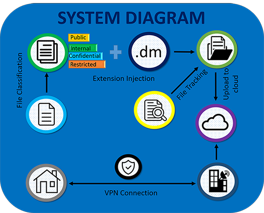

LITERATURE SURVEY
The rapid development of cell phones and utilization of portable applications have been an incredible impact on organizations. The study done by Accenture in 2012 uncovers, 20 percent of the smartphone usage is for business related reason in that time [2]. new trends such as BYOD going about as an additional challenge for enterprises dealing with their business utilizing IT. Increment of productivity and efficiency of employees has been reported form several companies which initiate the BYOD process.
Confidentiality and integrity of data has become major security concerns with the implementation of BYOD since information is one of the most valuable assets in corporate levels. Since Employees with BYOD facility being able to access enterprise data from anywhere, anytime this security concern makes more burdensome. Due to this reason and due to lack of software to manage BYOD devices most enterprises hesitate to initiate BYOD procedure.
In the research paper “bring your own device organisational information security and privacy” [4] by Abubakar Bello Garba, Jocelyn Armarego, David Murray in 2015, has categorized risks related to BYOD devices as Malware in BYOD, Phishing, social engineering and BYOD, Direct attacks and BYOD, Data communication interception/spoofing and BYOD, Loss/theft of devices and BYOD, Malicious insider actions and BYOD, User policy violations and BYOD.
Here they described aim of direct attacks in BYOD is typically to access, destroy and rewrite/modify and extract confidential information or to publicize the hackers for their exceptional talents. All the facts in aim of direct attacks excluding publicize the hackers for their exceptional talents, cause adverse effects to enterprises. Stealing, destroying or modifying of sensitive co-operative information of an organization which provide services to customer through internet can cause obstructive effects on that organization.
In the risk, ‘Data communication interception/spoofing and BYOD’ they state that if a user sends sensitive information over the internet and it is intercepted, sensitive data can be accessed, modified, exposed and even destroyed. Spoofed BYOD devices can be deceived into sending information to wrong recipient which can be a huge security concern.
‘Loss/theft of devices and BYOD’ is another major risk which has addressed in this research paper. They express that according to Australian Mobile Telecommunications Association over 100,000 mobile devices reported stolen or lost in almost every year. And also, over 2 million mobile devices are stolen in United Kingdom during 2005. Sensitive information can be easily revealed from a lost or stolen device which can cause adverse effects.
Malicious insiders exposing confidential is a common thing happens all around the world. As insiders have direct access to sensitive information of organization it is easy for them to steal, modify or destroy data. In our research we concern encryption of confidential documents in the organization is not the best way to secure sensitive information as if the malicious insider is the data owner, he can expose them as they can decrypt the data. Hence a new method for securing confidential documents has been introduced from our research using a tool created by us.
In the research paper “BYOD: Current State and Security Challenges”[5] by Meisam Eslahi, Maryam Var Naseri, H. Hashim, N.M. Tahir, Ezril Hisham Mat Saad, it has mentioned that currently there are three main security models for BYOD: Mobile Device Management (MDM), Mobile Application Management (MAM), and Mobile Information Management (MIM). In this research paper they express that main aim of Mobile Information Management (MIM) is to preserve enterprise information in a centric location and securely share them between different endpoints and platforms. This can be further described as personal files and cooperative documents should be stored separately and privacy of the user should not be harmed. in order to create secure file storage in cloud hybrid cryptography can be used and secure authentication channel should be created in order to access securely.
“Emergent BYOD Security Challenges and Mitigation Strategy”[6], a research paper by Ahmed Dedeche, Fenglin Liu, Michelle Le and Saeed Lajami, has mentioned that three most frequently identified BYOD risks are Data leakage and expose, Loss of control and visibility and Ease of device lost. Hence most enterprises hesitate to implement BYOD process.
Existing tools for managing BYOD devices, which is very few, addresses these security concerns in a very inadequate manner. Microsoft Intune which is the most expensive tool existing for managing BYOD devices, have several issues such as using encryption to secure confidential documents which is deficient if there is an inside attacker who have access to decrypt the file, and allowing employees to decide which security classification particular document falls into, make the product inferior and substandard.
RESEARCH GAP
According to the literature survey, several security concerns which has not yet addressed when implementing BYOD can be identified. Most of the current security measures define a way to protect confidential information using existing security methods which are unsatisfying for BYOD concept.
Present day enterprises have lot of confidential data which can only be accessed only by higher management and very few other people. Most of these companies allowed employees to decide, into what security classification level co-operative documents falls which is not an excellent way to perform it. Malicious insider is capable of deciding low security classification level for a document with sensitive information which can cause enormous damage to organization. Furthermore, in a large organization there are enormous number of files and documents which need to be classified. Automation of this process provides security and efficiency for an enterprise which has not been done yet.
Stealing and misplacing of devices is a tremendously common thing in an organization which use BYOD process and one of the common ways of leakage of sensitive information of the organization. In addition to previous fact improper disposal of IT assets is another way of sensitive information leakage in an enterprise. Remote controlling of the device should be a definite option which should be implemented in BYOD devices, which allows anti-forensics wiping, remote file transfer and remote encryption. Remote anti-forensics wiping which has not been implemented in the BYOD devices is successful method of preventing from confidential data leakage in an instance of lost or stolen device.
RESEARCH PROBLEM
Most of the existing software for managing BYOD devices such as Microsoft intune are use encryption for securing confidential information which is a doubtful method. If the confidential data owner is a malicious insider, particular data owner can send decrypted information to unauthorized outsiders or unauthorized insiders such as low-level employees. this is a fact not yet considered by any of the software producers.
One of the huge challenges of using of personal devices for enterprise work is preventing from cross contamination which should not allowing to mix enterprise document and personal documents and not having proper authentication method for it. Enterprise related documents should not be copied to personal work environment and vice versa.
| Scenario | Limitations | Solution |
|---|---|---|
Security classification of confidential documents |
Allowing employees to decide the classification type of the confidential documents |
Automating classification of documents by natural language processing |
| Loss of BYOD devices |
Leakage of confidential data due to not having proper remote controlling method. |
Implementing a protocol with remote anti-forensics wiping, remote encryption and remote file transfer methods |
| Securing confidential documents |
Encryption is used for securing confidential documents in BYOD devices which not secure if data owner is a malicious insider |
Inserting tool to confidential files which only let the files to open in authorized devices |
| Storing confidential documents |
Not having proper storing method and authentication methods |
Creating cloud storage using hybrid cryptography to secure files with two authentication channels |
Research Limitations & solutions
RESEARCH OBJECTIVES
MAIN OBJECTIVES
- Introducing a structured mechanism to manage confidential files in BYOD devices in an enterprise
- Automating file classification.
- Creating secure storage for enterprise documents in BYOD devices.
- Securing confidential files in BYOD devices in an efficient manner.
- Handling confidential information in stolen or misplaced BYOD devices securely.
- Automatic file monitoring system
Information which is one of the most valuable assets to an enterprise can be accessed anywhere, anytime when BYOD is implemented. Main objective of this research is to propose a better mechanism for securing confidential files in BYOD devices. This will help to manage confidential documents as well as store them securely.
File classification is mostly done manually, or employees are given permission to decide the security classification of the files which is possible of many mistakes as well as many malicious things. By automating the file classification lot of time will be saved as well as there cannot be no frauds as employees cannot decide the classification type of the documents.
In BYOD devices both personal documents and corporative documents are stored in same device which is a huge security concern. Personal document and confidential documents should not be merged, and they should be separated in an efficient manner.
Confidential files in BYOD devices should be secured without providing access to unauthorized people. Confidential information leakage of an enterprise causes enormous damage to particular enterprise in cost-vise as well as reputation-vise. These can be prevented by implementing proper mechanism to secure confidential files in BYOD devices.
As these devices are personally using devices they can be easily stolen or misplaced. In a case of stolen or misplaced device there is a high possibility of leaking information in those devices. In order to prevent that remote controlling mechanism should be implemented which helps to handle confidential information in stolen or misplaced BYOD devices.
File Tracking System will monitor all of the changes in that mentioned secured folder. Specially Authorized employees and admin can view and refer all loggings. If admin needs to terminate the monitoring process first admin should backup the loggings of the file systems and then the admin can monitor again with saving with the previous tracking data.
SPECIFIC OBJECTIVES
- Time effectiveness
- Efficiency
For manual file categorization it consumes lot of time. In a large enterprise there are thousands of documents. Analyzing and classifying them manually is not practical.
Automatic securing of documents is more efficient than managing documents manually.
METHODOLOGY

A secured directory in local storage of the BYOD device is unlocked when user logs in to the “Proteger” tool and it contains all the work-related documents. After classification of the documents, they will be uploaded to the cloud automatically. Confidential files are secured by an extension injection system and in order to view these files “Proteger” tool should be installed and employee should be in relevant tier. When employee logs into the enterprise network remotely the connection is monitored every time and if the connection is interrupted enterprise data will be encrypted. There are mainly two part of the implementation.
i. Securing confidential files
ii. Secure remote access
SECURING CONFIDENTIAL FILES
- Data Preprocessing
- Removing URLs, Non ascii values and numbers
- Converting text to lowercase
- Removing punctuation marks
- Lemmatizing verbs
- Tokenization
- File Classification
- File Monitoring System
- Access Permission
- File Securing Process
- Authentication of emplyee process
- File Storing
- Personal Data Section
- Official Data section
spaCy and NLTK are two significant libraries which can be used in NLP for data preprocessing. These two techniques have substantial differences as follows

As in figure 2.1 performance of spaCy is usually good compared to NLTK. As word tokenization and part-of-speech tagging which is the process of assigning word types to tokens like verb or noun, are going to used mostly in this implementation spaCy is the best option for this procedure.
Process of data preprocessing
Any documents which are desired to be classified by the employees will be analyzed and any URLs in analyzed documents will be removed in the first place. Non ascii values and numbers in the document will be eliminated in this process since they are not needed for the classification process.
In order to classify text, all the words should be in lowercase otherwise same words in different cases will be treated differently.
Any types of punctuation marks in the text will be eliminated in this process since if there are punctuation marks when analyzing the text, it will take more time for the classification process.
Lemmatization is the process of grouping together the different inflected forms of a word so they can be analyzed as a single item. For example, if there are three words as give, gave and given in the analyzing text, all those three words will be considered as the word “give” which is lot easier and faster in classification process.
Tokenization is the process of splitting a sequence of string into segments such as words, symbols and other elements. These split segments are called tokens. There are two types of tokenization techniques as word tokenization and sentence tokenization. Sentence tokenization is the process of splitting a sequence of text into sentences and word tokenization which is used in this process is the act of breaking up a sequence of text into words.
For document classification, Classification method under supervised learning is used along with the Naïve Bayes classifier. Documents are classified into four types as shown in the table
After file classification system it will save in the temporary folder and inject the ‘DM Tool’ extension. If the document is not a public file, when files are moved to the Official directory, file will be encrypted automatically. Otherwise, the document will store in the Official directory without encrypting. After adding to the official directory, the files will automatically upload to the cloud.
This File Tracking System will monitor the all of the changes in that mentioned secured folder. Specially Authorized employees and admin can view and refer the all loggings. If admin needs to terminate the monitoring process first admin should backup the loggings of the file systems and then admin can monitor again with saving with the previous tracking data. This system will track all the types of changes to directories and files.
The file tracking system is a web-based application developed by the Java script. The back end of the system developed by using node JS and front end developed by React JS. Here ‘watcher’ method of the back end will always keep in touch with the given folder. That method always looking for some changes in the folder. If we add a file/ directory or do some changes then the method will automatically identify it and add the changes into file tracking history. Then all of the file histories will save to the JASON file. The front end will get the data from that JASON file by using API requests.
Using API requests front end will get the data and divided data into seven categories mentioned above. Then admin can easily check the directory logs by directory category and admin can check other categories like that. This is a huge establishment and needs to store a lot of editing history. Therefore, the system has two options to solve that mess. Admin can back up the data and restart the monitoring. Otherwise, admin can filter the data by using a file name, modified date & time, and IP address. It will help to identify the correct issue in a second. Otherwise, need more time to find the issue.
Using this 'Proteger' tool it will identify the status of the employee and categorized them into four tiers. And each category mentioned the different permission status.
Flow control of the ‘file securing process’ is displayed in the figure 3.4. After the file classification, the system, it will save in the temporary folder and inject the ‘DM Tool’ extension. If the document is secret than a public file, when we have moved files into the Official directory, the file will be encrypted automatically. Otherwise, the document will store in the Official directory without encrypting. After adding to the official directory, the files will automatically upload to the cloud.
If the document is a confidential file, 'DMtool' will be injected into that file and create an executable file. This final executable file will store in the cloud environment. When we download the executable confidential file into the BYOD, then it will automatically execute and start searching to see whether the 'Proteger' tool is available to confirm the authenticity of the device.
After download the confidential file the user must log in to the ‘proteger’ tool because of the ‘DM Tool’ extension. All the confidential files in the cloud share point can only be decrypt and edit through the ‘Proteger’ tool. Therefore, we must log in to the ‘proteger’ and it will identify our employee tier using the employee user id. The user id is the unique data and all of the employees’ data saved by using the user id. The system can generate the tier of the employee according to their status. When a user login to the system, ‘proteger’ will identify the status of the employee by given user id. Then the employee can available to access confidential files according to the above access permission chart.
Flow control of the ‘Authentication of employees’ is displayed in the figure. When opening the secured confidential file user must login to the ‘proteger’ tool. If there are not install ‘proteger’ tool in your BYOD you can’t access the files. After login to the ‘proteger’, It will automatically identify the tier of the employee and giving permission only for relevant employees. If an employee is in the relevant tier for access to the document, he can access the document and re-upload to the cloud for sharing.
For data security and privacy protection issues, the fundamental challenge of separation of sensitive data and access control is fulfilled. Cryptography technique translates original data into unreadable form. Using this technique only authorized person can access data from cloud server. In this research, Employee’s files will be divided in to two parts as Personal files and official files. These files will be uploaded to the cloud. To store these files, different buckets will be used. AWS S3 is used to create buckets. (Personal File Bucket and Official File Bucket). Different keys are used to encrypt these Personal and Official file buckets because of the need of two authentication channels. Now Employee can get personal data using Personal pin number and official data using Official login or Domain. Employee can upload personal files and official files using that AWS Buckets. It will be uploaded to the relevant folders in the cloud automatically.
In order to attain secure, storage and access on source knowledge within the cloud we tend to exploit the technique of elliptic curve cryptography encoding to shield data files and planned model has two halves in the cloud storage server, Personal section and Official data section. These two a part of the cloud storage server makes the sharing of knowledge simple and secure. User use the non-public knowledge section to store his private data that's accessible to explicit user solely, whereas shared data section is employed to store the info that must be shared among trusty users. This section is accessible to the actual user and his trusty users solely. Data keep over cloud and flow through network in plain text format may be a security threat. So, in our projected model all the information keeps in each section (Personal data section, Official section) are going to be encrypted by victimization the elliptic curve cryptography approach.
This section is just to store the user’s private knowledge and ensures the protection and privacy of personal data section only. It uses all the on top of four operation to store and access the info from cloud storage. The design model of this section is shown in Figure-2, letter shown in arrow of the model is that the on top of operation range. Once user wishes to store non-public knowledge it ought to be hold on within the private section of the individual user that's accessible to explicit user solely. All the info holds on within the non-public data section are going to be encrypted by secret key that's generated by E-module victimization Personal PIN.
Official file folder divides in to 3 phase it is a High Level, Low Level, Middle Level. Official File bucket has separate folders for employee’s tiers. Example is High level employee’s data could not be accessed low level employees. So, it has a separate database store this folder, most organizations have 3 management levels: first-level, inferior, and ranking managers. These managers are classified in step with a hierarchy of authority and perform totally different tasks. In several organizations, the number of managers in every level provides the organization a pyramid structure.
SECURE REMOTE ACCESS
After classification of data in the cloud storage, encryption and decryption happens. In the cloud, there will be a separate folder for each and every person who log in to the organizational server. The folder that were made in the cloud is containing two sub parts. One is for the personal details and the other one is for the official details. If the user saves the details in the wrong sub-folder, classification will sort those data and store them in the correct folder. All after in this classification process, the most important data security process will start.
- Device Initiation
- Login and Log out Management
- Heartbeat Management
- Heartbeat alive - no function runs
- Heartbeat stopped - Trigger Encryption function
- Heartbeat Starts -Trigger Decryption function
- Remote Encryption
- Remote Wiping
- Creation of Protocol
Prior to everything when a user agreed to plug his/her laptop to the organizational network a folder will be created in the user’s computer and it will be the base folder of the agent which will be installed into the OS. And then all the permissions related to that folder will be assigned.All access permission is given to agent user and wite access will be given to the user.
All the organizational files must be stored inside that particular folder and no one can copy any document from that folder to other locations. While application monitoring and other features will be handled by other research components this specific research component intent to allow security to the organizational files. By default, all the files in the organizational folder will be encrypted by the user agent and the key file will be stored inside the computer and the access permission is set to only the agent can access the file. AES/SHA256 encryption algorithm is used for this process and
When a user connects to the organizational network user has to login to the user agent software which will be installed into the system during the initiation process. And then the user will be authenticating with the server and the heartbeat process starts running, simultaneously file decryption process starts.
When a user logout or disconnect from the network automatically heartbeat process stops, and all the files will be automatically decrypted.
In computer clusters, a heartbeat network is a private network which is shared only by the nodes in the cluster and is not accessible from outside the cluster. It is used by cluster nodes to monitor each node's status and communicate with each other message necessary for maintaining operation of the cluster. Every user session will have a heartbeat with the central server, and it is the process which triggers encryption and decryption processes.
By remote encryption, after sending a message to a computing device its convert data to the unreadable format by using an algorithm with a key.
This encryption process happens when the device is unplugged from the user's pc or organization administrators ask to do so. Whenever user plugged this device and starting to use it, data in the cloud will decrypt in order to read and write in the cloud storage. After the workout, when user unplugged the device from their own pc, the entered data will be classified into 2 folders. After that this software encrypt all the data in the folder and secure the data in the cloud [11]. So that no one can read or write on those entered data except administrators. So, by this remote encrypting data, will supply a great benefit to the high security of this software.
Remote wipe is a security feature that allows a network administrator or device owner to send a command to a computing device and delete data. An anti-forensic wiping system is used for this and after the Anti-Forensic Wipe on a device, previously stored data is completely unrecoverable, even with the most sophisticated extraction tools.
This data wiping is more important mostly when an emergency happens. Such as if someone stole this device or another one got our security pin number. If those above-mentioned incidents occur, remote wiping will help to wipe all the data that were stored in the cloud without connecting the device. This remote wiping is done only by the administrators in the organization. Because they are the party who holds all the security pin numbers that were entered by the users.
All the organizational files must be stored inside that folder and no one can copy any document from that folder to other locations. While application monitoring and other features will be handled by other research components this specific research component intent to allow security to the organizational files. By default, all the files in the organizational folder will be encrypted and they will be decrypted to use when the computer is connected to the organizational network. When a device disconnects from the network automatically all the files will be encrypted. While a PC connects to the network administrator has all the privileges to wipe the entire folder or encrypt the folder and transfer files to that folder. Once the wiping and encrypting commands issued by the administrator even though the device will be disconnected from the network process will be automatically run.
TECHNOLOGIES USED
Node Js
Node JS is used for developed the backend of the File tracking system. Node.js has been considered as a full-stack programing language. Node JS serving both the client and the server-side applications. One of the main advantages of Node.js is that developers find it easy to scale the applications in horizontal as well as the vertical directions and the language is easy to learn.
Python
Python is a general purpose and high level programming language. You can use Python for developing desktop GUI applications, websites and web applications. Also, Python, as a high level programming language, allows you to focus on core functionality of the application by taking care of common programming tasks.
React Js
React JS is used for developed the Frontend of the File tracking system. React JS is the open source javascript library used for user interface for single page applications. React JS facilitate the overall process of writing components. Ensure fast rendering and SEO friendly. Node JS comes with helpful developer toolset and easy to learn.
AWS
Amazon Web Services is a subsidiary of Amazon that provides on-demand cloud computing platforms to individuals, companies, and governments, on a metered pay-as-you-go basis
MILESTONES OF THE PROJECT
IMPORTANT DOCUMENTS
PRESENTATIONS

ABOUT US
PROTEGER DEVELOPMENT COMMUNITY
KEEP IN TOUCH WITH US
SLIIT Malabe Campus
New Kandy Rd, Malabe 10115
ka.kanishka@gmail.com
sandaru.ht@gmail.com
Kanishka - 0774614664
Sadaru - 0770077515
Posted In: Software Developer
15 21